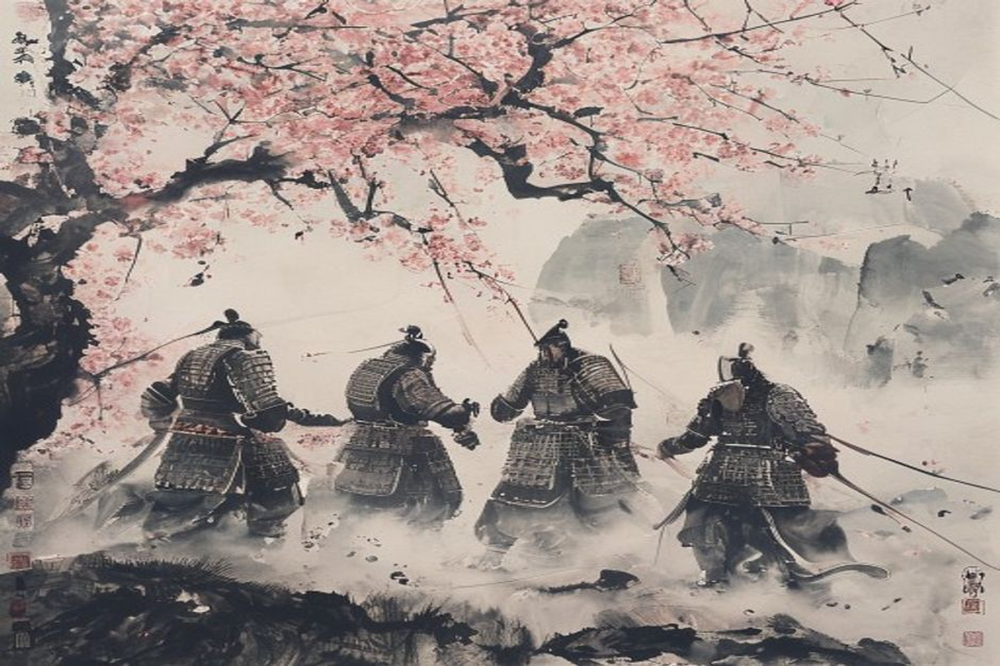

天下大势，分久必合，合久必分
Historical Overview
Luo Guanzhong (c. 1330–1400), a Ming dynasty writer who compiled historical records, folk stories, and dramatic traditions into this epic masterpiece.
Written during the early Ming dynasty (c. 1368-1398), the novel draws from Chen Shou's historical Records of the Three Kingdoms (3rd century CE).
The late Eastern Han dynasty and Three Kingdoms period (184–280 CE), depicting the political and military struggles between Wei, Shu, and Wu.
Comprising 120 chapters and approximately 800,000 characters, making it one of the longest works in Chinese literature.
Historical Significance
Romance of the Three Kingdoms is celebrated for its unique blend of history and fiction—described as "seven parts fact, three parts fiction" (七实三虚) by the Qing dynasty historian Zhang Xuecheng. The novel draws from Chen Shou's Records of the Three Kingdoms as its historical foundation, while embellishing events with folk stories, dramatic traditions, and the author's imagination.
This approach created a work that feels historically authentic while being dramatically compelling. The description of social conditions and the logic characters use remains accurate to the Three Kingdoms period, creating believable situations even when events are not strictly historical.
The empire, long divided, must unite; long united, must divide. Thus it has ever been.
— Opening lines, Romance of the Three KingdomsThe novel explores profound themes of political legitimacy, the relationship between politics and morality, and the conflict between Confucian idealism and Legalist pragmatism. It examines the nature of human ambition through characters like Liu Bei (the idealistic leader), Cao Cao (the pragmatic villain), and Zhuge Liang (the brilliant strategist).
As critic Roy Andrew Miller noted, the novel's chief theme is "the nature of human ambition," while scholar Peter Moody added the relationship between politics and morality as a related theme. The heroes are forced to make tragic choices between equal values, not merely between good and evil.
Why It Endures
The Romance of the Three Kingdoms has achieved "canonical status" across East Asia. In Korea, it has been called "the national novel," with Yi Mun-yol's 1988 translation selling over 20 million copies—Korea's all-time best-selling novel. The novel has had "a tremendous impact on the Thai worldview" and remains widely read in Japan, Vietnam, and throughout Southeast Asia.
Its influence extends beyond literature into business strategy, military tactics, and popular culture. The novel's proverbs have entered everyday Chinese language, and its characters have become cultural symbols recognized throughout East Asia.
Many Chinese proverbs in use today derive from the novel, including "Speak of Cao Cao and Cao Cao arrives" (说曹操，曹操到)—equivalent to "speak of the devil"—and "Three cobblers are equal to one Zhuge Liang" (三个臭皮匠，胜过一个诸葛亮), expressing the power of collaboration.
The novel also profoundly influenced religious practices. Guan Yu, the sworn brother of Liu Bei, became venerated as a Bodhisattva in Buddhist tradition, with temples dedicated to him found throughout East Asia. His representation in the novel elevated him from historical general to cultural deity.
Key Characters
Liu Bei · The Benevolent Leader
The idealistic leader who founded the Shu Han kingdom. His virtue and commitment to Confucian ideals of benevolence make him the novel's protagonist.
Cao Cao · The Cunning Strategist
The brilliant but ruthless leader of Wei. Often portrayed as the villain, he represents pragmatic Realpolitik and the complexity of ambition.
Zhuge Liang · The Sleeping Dragon
The legendary strategist whose wisdom and loyalty to Liu Bei have made him a cultural symbol of intelligence and devotion.
Guan Yu · The God of War
The embodiment of loyalty and righteousness. His historical legacy transformed him into a deity worshipped throughout East Asia.